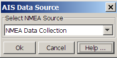

The AIS module requires an NMEA Data Source configured to read AIS data via a serial port.
The normal baud rate for AIS receivers is 38400 bps.
To configure the AIS module, open the AIS configuration dialog from the Detection>AIS Ship Reporting menu and select the correct NMEA data source.

If a database module is active in the PAMGuard model, then AIS data will be logged to the database